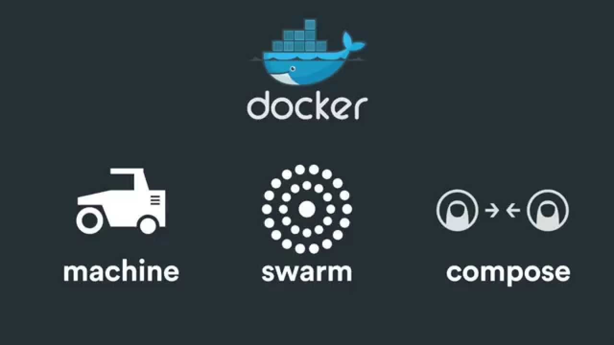

Does the heavy lifting of building, running, and distributing your Docker containers
Docker Client
Runs on your machine
It connects to the docker daemon, ie.$ docker pull or $ docker run
Docker Images
Docker images are the blueprints for your applications
Docker Containers
Containers are created from docker images, and they are the real instances of our containers/lego bricks
They can be started, run, stopped, deleted, and moved
Docker Hub (registry)
A Docker Registry is a hosted registry server that can hold Docker Images
Docker Overview

Machine
Machine lets you create Docker hosts on your computer, on cloud providers, and inside your own data center. It creates servers, installs Docker on them, then configures the Docker client to talk to them.
Compose
Compose is a tool for defining and running complex applications with Docker
Swarm
Swarm is native clustering for Docker. It turns a pool of Docker hosts into a single, virtual host